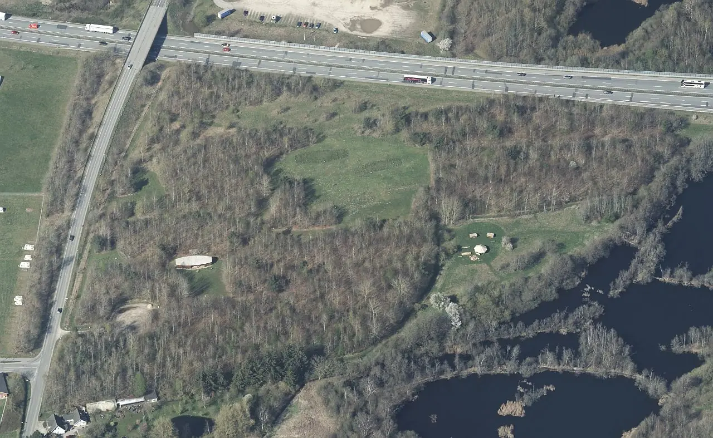
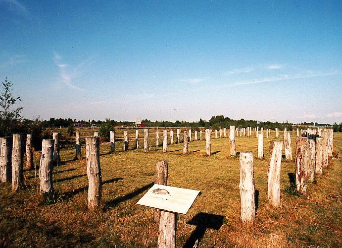
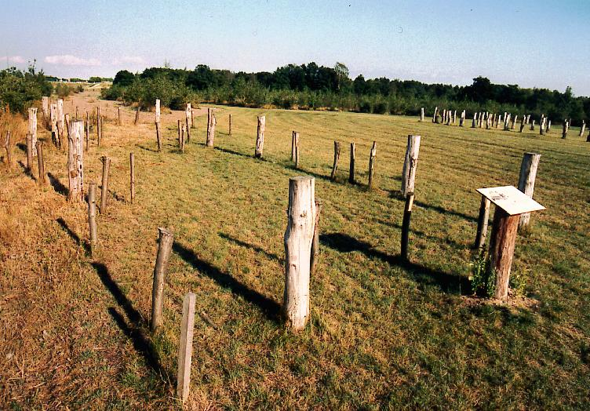
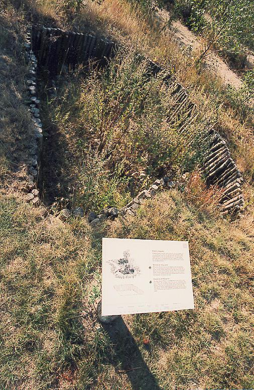
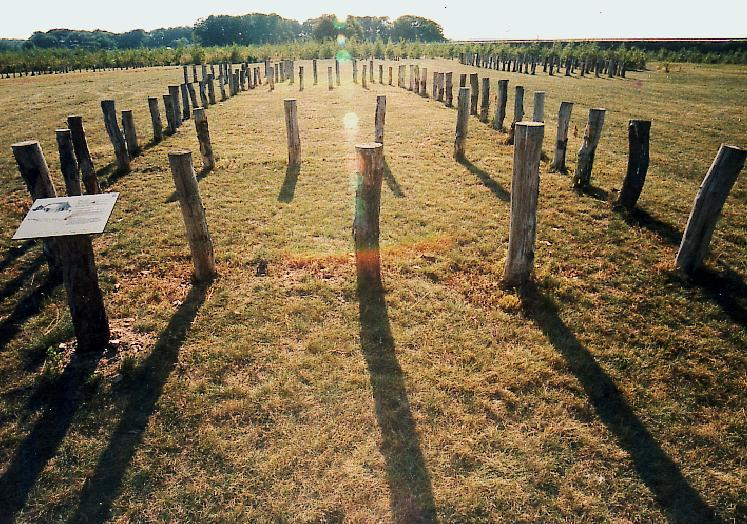

Bytoften
Siedlung


88 - Bytoften - Letztes Update 02.04.2024
Navidaten: 55.34843 10.58354 - oder: Bytoften, Røjrupvej 60, 5550 Langeskov, Dänemark

Dies ist ein Luftfoto vom 17.04.2023 von Skråfoto das Bytoften und Umgebung / die Lage zur Autobahn zeigt. Skråfoto ist eine Webanwendung, die von der Dänische Agentur für Datenversorgung und Infrastruktur weltweit kostenlos bereitgestellt wird - frei von Urheberrechten. Die Aufnahmen werden alle zwei Jahre erneuert und neben einer Senkrechtaufnahme wird ein Schrägbild aus jeder Himmelsrichtung angeboten, das man über eine Adresssuche aufrufen kann.
Auf Bytoften haben in den Jahren 1979-81 und 1988-91 umfangreiche Untersuchungen durch Archäologen des Museums für die Vor- und Frühgeschichte Fünens - Hollufgård/Odense, des Kerteminde Bezirksmuseums und der Universität Odense stattgefunden. Auf Bytoften fanden sich Spuren von Besiedlung durch viele Jahrtausende hindurch.
Aus der wikingerzeitlichen Epoche sind 2 Langhäuser, 1 Brunnen, 1 Heuschober (?), 1 mittleres und 2 kleinere - dicht beieinander liegende - Häuser ausgegraben worden.
Die ursprüngliche Lage der Bauten ist durch Pfähle markiert worden. Sie liegen in einem neugepflanzten Wald, dessen Baumsorten auch in der Römischen Eisenzeit in dieser Gegend vertreten waren.
Man fährt auf der Autobahn in Richtung Nyborg. Nach der Anschlussstelle Langeskov kommt ein Rast-/Parkplatz. Auf dessen Gelände ist eine kleine Infotafel zu Bytoften aufgestellt. Ein kurzer Fußweg - ca. 500 m - führt zu dem in der Nähe gelegenen Areal.
Ein rekonstruiertes Wikingerhaus im Areal brannte am Mittwoch, 25.06.2014, ab. Der Neubau wurde im April 2019 der Öffentlichkeit übergeben.
In der Nachbarschaft gibt es auch zwei Übernachtungshütten, sogenannte Shelter.
Zuletzt war ich am Freitag, 16.08.1996, vor Ort und habe diese Fotos gemacht.




Als 1978 die Autobahn über Fünen gebaut wurde, fanden Archäologen im nahegelegenen - ca. 1,3 km entfernt - Rosenlund ein Kammergrab. Darin befanden sich die Überreste eines angesehenen Wikingerreiters. Das Grab eines Reiters enthält neben dem Krieger meist eine komplette Reitausrüstung: Steigbügel, die Beschläge des Zaumzeugs und in manchen Fällen auch noch das eigentliche Pferd. Die Artefakte aus dem Rosenlund-Grab wurden zwischen dem Wikingermuseum Ladby und Møntergården in Odense geteilt. Dort wird aus dem Grabfund auch das Schwert mit dem eingravierten Namen "Ulfberth" aus dem 10. Jahrhundert ausgestellt.
Facebook - https://www.facebook.com/people/Bytoften/100064991344915/
Private dänische Infoseite zu Bytoften
Literaturhinweise:
Bytoften - et oldtidslandskab på Østfyn - von Mogens Bo Henriksen und Erland Porsmose, 56-seitig, Kerteminde Museums skrifter 1995